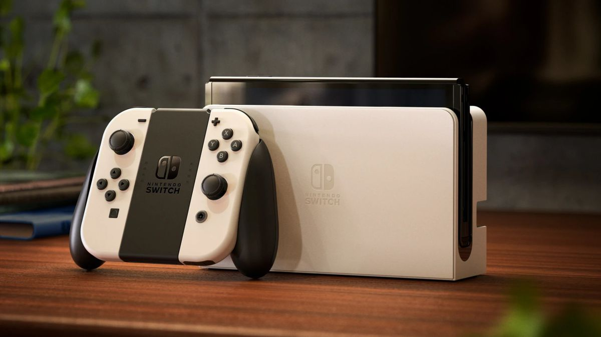
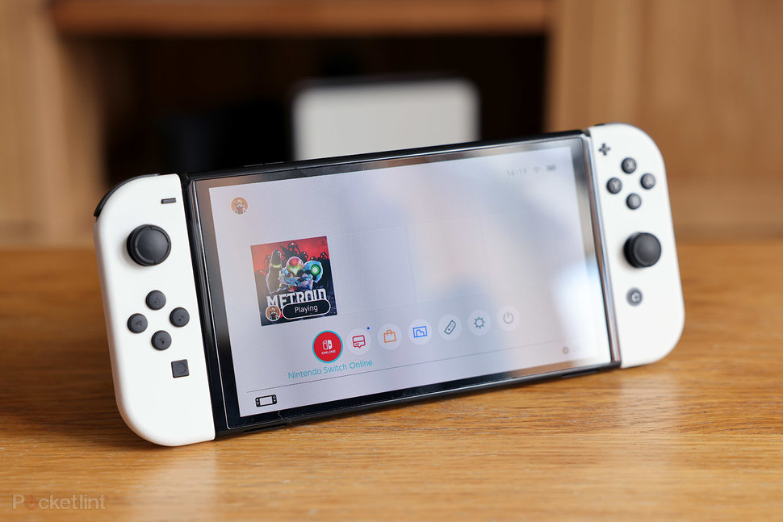

Nintendo Switch OLED


Descripción
- Nintendo Switch (modelo OLED) (blanca), compuesta por dos mandos Joy-Con blancos, cuerpo negro y base blanca.
- Modo televisor: la consola Nintendo Switch (modelo OLED) se encaja en la base para jugar en el televisor. El puerto LAN integrado ofrece otra forma de conectarse a internet en el modo televisor.
- Modo sobremesa: se abre el soporte de la parte posterior y se utiliza la pantalla de la consola para disfrutar como nunca de partidas multijugador con los dos mandos Joy-Con incluidos. El soporte ancho ajustable aporta más estabilidad y permite inclinar la consola en un ángulo mayor para ver mejor la pantalla.
- Modo portátil: los usuarios pueden llevarse la consola donde quieran y jugar con varios amigos de manera local o en línea. La pantalla OLED de 7 pulgadas ofrece colores más intensos y un alto contraste de imagen. Es posible que se requieran accesorios, juegos y/o consolas adicionales (a la venta por separado) para el modo multijugador. Se requiere conexión a internet durante el juego en línea.
Detalles del producto
- Is Discontinued By Manufacturer : No
- Pilas: 1 Litio Ion necesaria(s), incluida(s)
- Clasificado: Calificación por edades desconocida
- Dimensiones del producto:9.8 x 20.8 x 25.7 cm; 420 gramos
- Fecha de lanzamiento: 8 octubre 2021
- ASIN: B098RJXBTY
- Número de modelo del producto:1179573